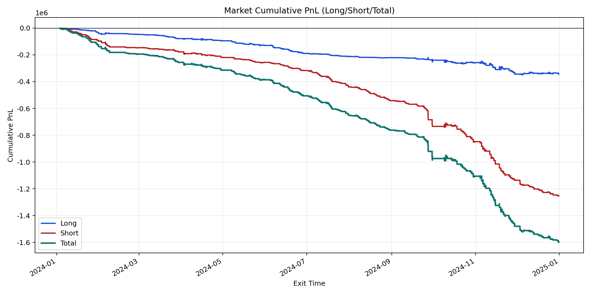
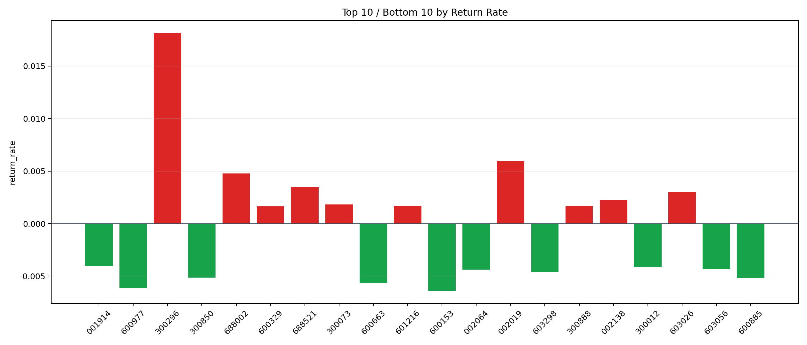

| repo_root | /home/haoranyou/data/output/dynamic_AUM_TAKER_index500 |
|---|---|
| period_months | 12 |
| period_label | 2024-01-03_to_2024-12-31 |
| start_time | 2024-01-03 09:51:27 |
| end_time | 2024-12-31 14:38:02 |
| n_trades | 72044 |
| n_symbols | 305 |
| total_pnl | -1599086.9832500042 |
| long_total_pnl | -344995.6777999914 |
| short_total_pnl | -1254091.3054500127 |
| total_entry_notional | 1305907907.0 |
| long_entry_notional | 522630158.0 |
| short_entry_notional | 783277749.0 |
| total_return_rate | -0.0012245021066788014 |
| long_return_rate | -0.0006601143705908977 |
| short_return_rate | -0.0016010812346592175 |
| top_symbols_by_return | ["300296", "002019", "688002", "688521", "603026", "002138", "300073", "601216", "300888", "600329"] |
| bottom_symbols_by_return | ["600153", "600977", "600663", "600885", "300850", "603298", "002064", "603056", "300012", "001914"] |

